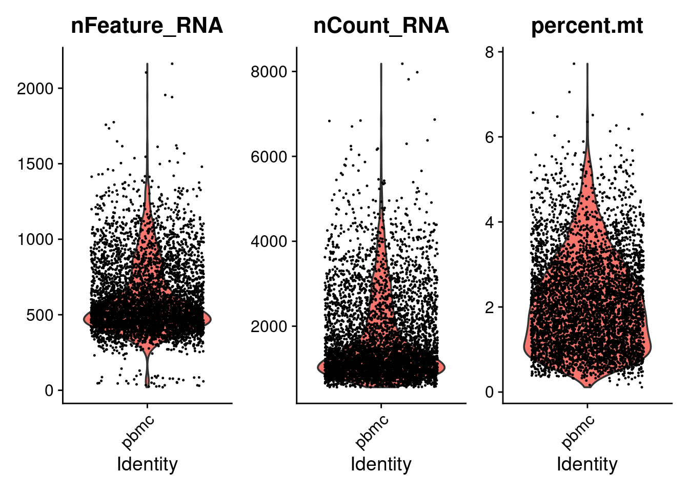
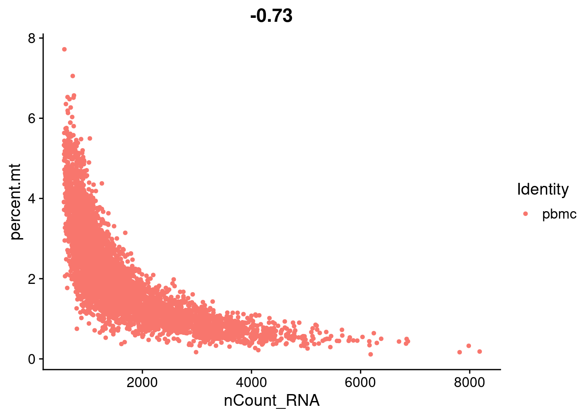
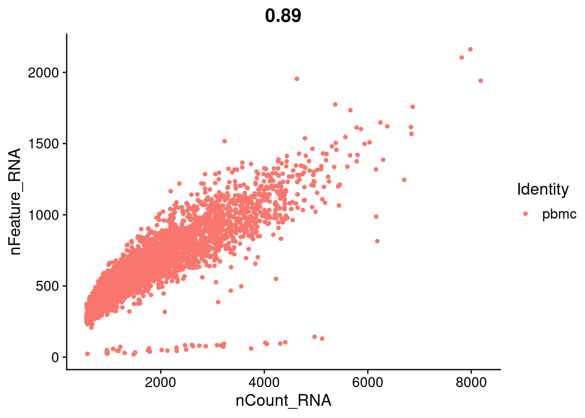
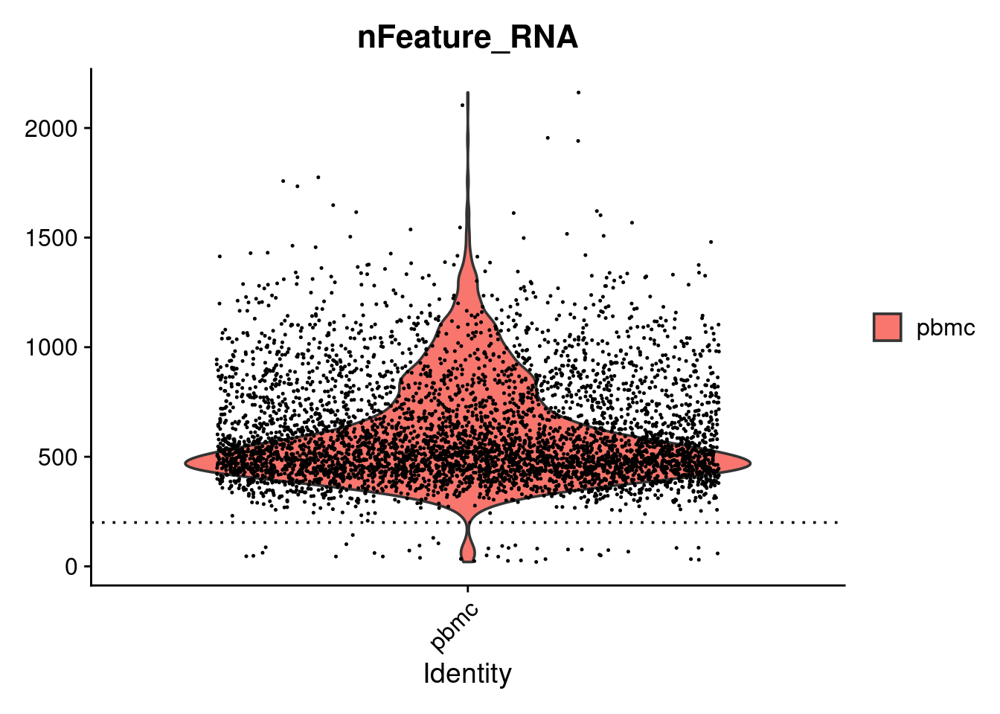
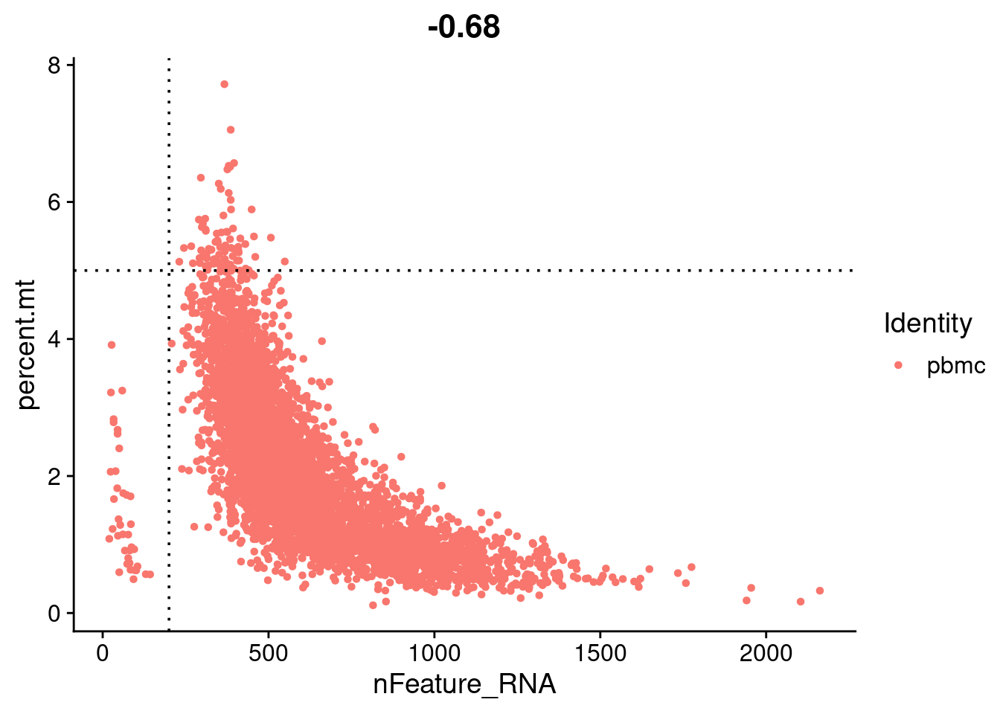
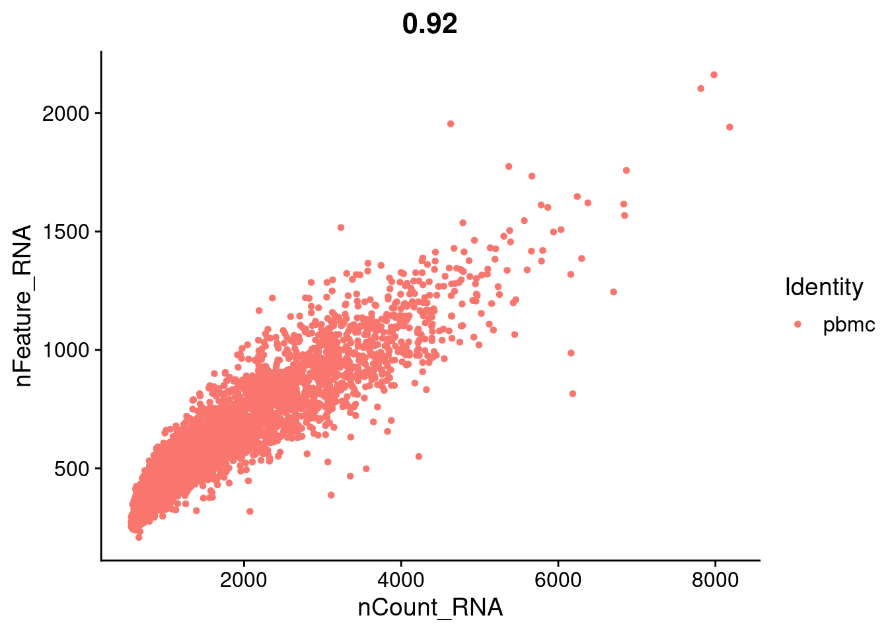
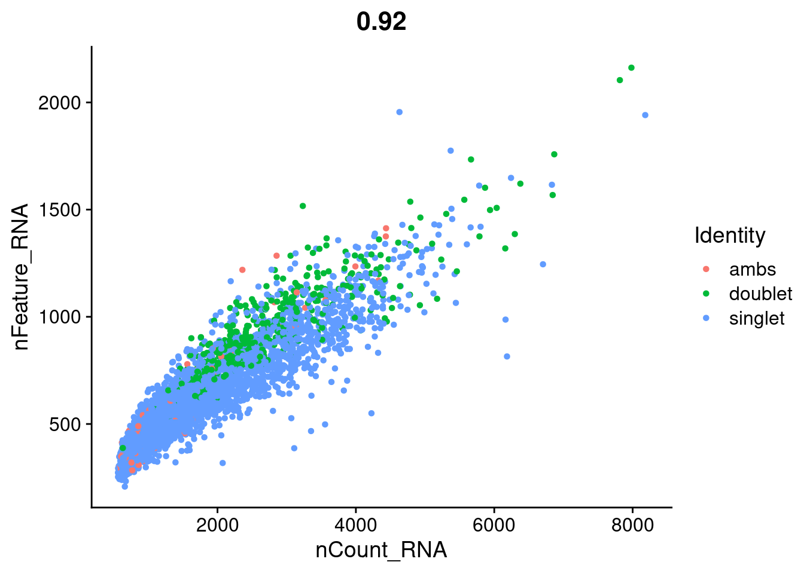

5 QC Filtering
The steps below encompass the standard pre-processing workflow for scRNA-seq data in Seurat. These represent the selection and filtration of cells based on QC metrics, data normalization and scaling, and the detection of highly variable features.
5.1 Learning outcomes
- Be able to visualise common QC metrics in scRNAseq
- Understand the biological and technical factors affecting these metrics and their impacts.
- Understand how to choose and apply filtering thresholds to your own datasets.
5.2 QC and selecting cells for further analysis
Why do we need to do this?
Low quality cells can add noise to your results leading you to the wrong biological conclusions. Using only good quality cells helps you to avoid this. Reduce noise in the data by filtering out low quality cells such as dying or stressed cells (high mitochondrial expression) and cells with few features that can reflect empty droplets.
Typically, you might recive a QC report for your sample from the prepocessing steps. Here is one example from 10X. Inspecting these reports are a good first step in your QC assessment.
Seurat allows you to easily explore QC metrics and filter cells based on any user-defined criteria. A few QC metrics commonly used by the community include
- The number of unique genes detected in each cell.
- Low-quality cells or empty droplets will often have very few genes
- Cell doublets or multiplets may exhibit an aberrantly high gene count
- Similarly, the total number of molecules detected within a cell (correlates strongly with unique genes)
- The percentage of reads that map to the mitochondrial genome
- Low-quality / dying cells often exhibit extensive mitochondrial contamination
- We calculate mitochondrial QC metrics with the
PercentageFeatureSet()function, which calculates the percentage of counts originating from a set of features
We first use the set of all genes starting with MT- as a set of mitochondrial genes. (This works because that’s how mitchondrial genes are named in this reference)
# The $ operator can add columns to object metadata.
# This is a great place to stash QC stats
seurat_object$percent.mt <- PercentageFeatureSet(seurat_object, pattern = "^MT-")Challenge: The meta.data slot in the Seurat object
Where are QC metrics stored in Seurat?
- The number of unique genes and total molecules are automatically calculated during
CreateSeuratObject()- You can find them stored in the object meta data
What do you notice has changed within the meta.data table now that we have calculated mitochondrial gene proportion?
## Examining the metadata ...In the example below, we visualize QC metrics. We will use these to filter cells.
# Visualize QC metrics as a violin plot
VlnPlot(seurat_object, features = c("nFeature_RNA", "nCount_RNA", "percent.mt"), ncol = 3)
#> Warning: Default search for "data" layer in "RNA" assay
#> yielded no results; utilizing "counts" layer instead.
# FeatureScatter is typically used to visualize feature-feature relationships,
# but can be used for anything calculated by the object,
# i.e. columns in object metadata, PC scores etc.
FeatureScatter(seurat_object, feature1 = "nCount_RNA", feature2 = "percent.mt")
FeatureScatter(seurat_object, feature1 = "nCount_RNA", feature2 = "nFeature_RNA")
Challenge: Red Blood Cells
Genes “HBA1”, “HBA2”, and “HBB” are components of hemoglobin in red blood cells.
- Use PercentageFeatureSet, passing these genes to the “features” argument, to find cells that might be red blood cells.
- How do cells high in these genes differ from other cells, in terms of number of features or total count?
- Should we remove these cells?
Let’s look again at the number of features (genes) to the percent mitochondrial genes plot.
min_nFeature <- 200
max_mt_pc <- 5
VlnPlot(seurat_object, features = "nFeature_RNA") + geom_hline(yintercept=min_nFeature, lty=3)
#> Warning: Default search for "data" layer in "RNA" assay
#> yielded no results; utilizing "counts" layer instead.
FeatureScatter(seurat_object, feature1 = "nFeature_RNA", feature2 = "percent.mt") +
geom_hline(yintercept=max_mt_pc, lty=3) +
geom_vline(xintercept=min_nFeature, lty=3)
You can check different thresholds of mito percentage.
#Number of cells that would be left after filters
# Proportion of cells with less than 5% mito
mean(seurat_object$percent.mt < 5)
#> [1] 0.983
# Proportion of cells with less than 2% mito
mean(seurat_object$percent.mt < 2)
#> [1] 0.5158Ok, let’s go with these filters:
- We filter cells to have >200 unique features
- We filter cells that have >5% mitochondrial counts
Let’s apply this and subset our data. This will remove the cells we think are of poor quality.
seurat_object <- subset(seurat_object, subset = nFeature_RNA > 200 & percent.mt < 5)Let’s replot the feature scatters and see what they look like.
FeatureScatter(seurat_object, feature1 = "nCount_RNA", feature2 = "percent.mt")
FeatureScatter(seurat_object, feature1 = "nCount_RNA", feature2 = "nFeature_RNA")
We also wondered if cells with high counts might be doublets. Should we also filter cells with very high counts? With this data, we know for certain some of the doublets!
FeatureScatter(seurat_object, feature1 = "nCount_RNA", feature2 = "nFeature_RNA", group.by="multiplets")